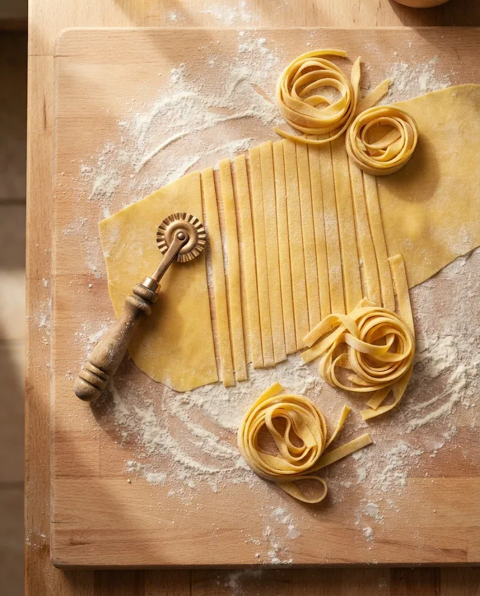
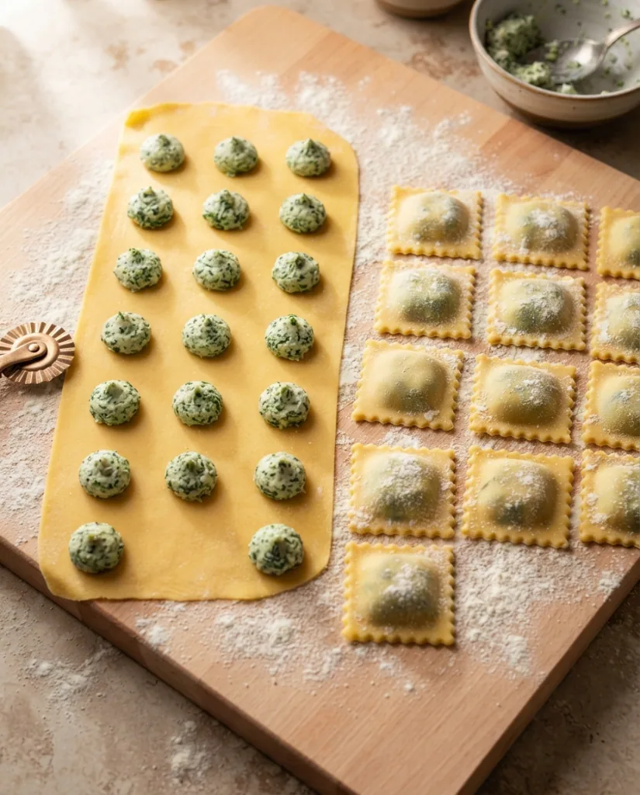

01
Harina y huevo
Todo empieza en la tabla: un volcán de harina y huevos frescos en el centro. Nada más.
La pasta que te comes aquí no llega en un paquete: la hacemos nosotros, igual que las salsas y los raviolis. Baja y mira cómo.
Todo empieza en la tabla: un volcán de harina y huevos frescos en el centro. Nada más.

A mano, hasta que la masa queda lisa y elástica. Ahí está la textura que se siente al morder.

La masa se estira en láminas finas y se corta: spaghetti, tagliatelle o pappardelle.

Se enrolla en nidos con un poco de harina para que no se pegue. Lista para la olla.

Los raviolis se rellenan uno a uno: carne, ricotta, 4 quesos, cordero, portobello, salmón y más.
Nuestro chef viene de Génova, la tierra del pesto y de los raviolis. Por eso la bandera blanca con la cruz roja que cuelga en el salón no es la de Inglaterra: es la de su ciudad.
Gira el mundo y sigue el camino que hizo la receta.
La historia del pestoCargando el mundo…

La pasta de nuestra fábrica también se va contigo, para que la cocines en casa cuando quieras.
Ver la pasta para casa